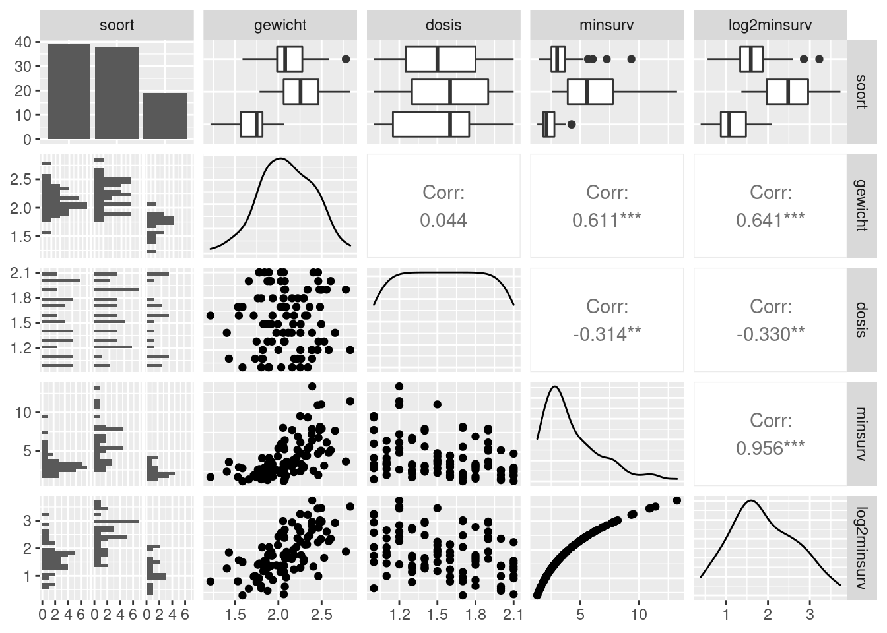

Resistentie tegen het gif EI-43,064 wordt getest bij 96 vissen
(dojovissen (0), goudvissen (1) en zebravissen (2)). Elke vis wordt
apart in een aquarium gestopt die een bepaalde dosis (in
mg) van het gif bevat. Naast de overlevingstijd in minuten (de uitkomst,
minsurv) werd ook het gewicht van de vis
gemeten (in gram). De onderzoekers weten uit vorige experimenten dat de
overlevingstijd vaak sterk afhangt van het gewicht en dat de resistentie
dikwijls soortafhankelijk is. De onderzoekers wensen inzicht te krijgen
in het effect van de dosis en het gewicht van de vis op de
overlevingstijd en of resistentie tegen het gif verschillend is bij de
verschillende soorten.
library(dplyr)##
## Attaching package: 'dplyr'## The following objects are masked from 'package:stats':
##
## filter, lag## The following objects are masked from 'package:base':
##
## intersect, setdiff, setequal, unionlibrary(ggplot2)
#install.packages("GGally")
library(GGally)## Registered S3 method overwritten by 'GGally':
## method from
## +.gg ggplot2library(car)## Loading required package: carData##
## Attaching package: 'car'## The following object is masked from 'package:dplyr':
##
## recodelibrary(multcomp)## Loading required package: mvtnorm## Loading required package: survival## Loading required package: TH.data## Loading required package: MASS##
## Attaching package: 'MASS'## The following object is masked from 'package:dplyr':
##
## select##
## Attaching package: 'TH.data'## The following object is masked from 'package:MASS':
##
## geyserLees de dataset poison.dat in via read.table. We zagen
in de voorgaande practica al dat de overlevingstijd beter op log2-schaal
wordt gemodelleerd.
poison <- read.table("https://raw.githubusercontent.com/statOmics/statistiekBasisCursusData/master/practicum8/poison.dat", sep="", header = TRUE)
# We vormen de vissoort om in een factor en log2 transformeren de overlevingstijd
poison <- poison %>%
mutate(soort = as.factor(soort),
log2minsurv = log2(minsurv))
poison %>%
ggpairs## `stat_bin()` using `bins = 30`. Pick better value with `binwidth`.
## `stat_bin()` using `bins = 30`. Pick better value with `binwidth`.
## `stat_bin()` using `bins = 30`. Pick better value with `binwidth`.
## `stat_bin()` using `bins = 30`. Pick better value with `binwidth`.
De overlevingstijd lijkt geassocieerd met het gewicht, soort en de dosis.
We observeren een sterke positieve associatie tussen de log2-overlevingstijd en het gewicht.
Bij lage gewichten lijkt de log2-overlevingstijd wat af te vlakken.
Daarnaast zien we ook dat het gewicht niet gelijk verdeeld is binnen elke dosis.
Er lijkt ook een associatie tussen de gewicht en soort.
We bestuderen de effecten verder:
Geef een scatterplot voor de log2-overlevingstijd ten opzichte van de dosis, voor elke soort apart. Trek ook een best passende rechte door elke figuur. Wat kan je opmerken over de log2-overlevingstijd in functie van de dosis? Verschilt de invloed van de dosis op de log2-overlevingstijd tussen de soorten?
scatterplot1<-poison%>% ggplot(aes(x=dosis, y=log2minsurv))+
geom_point()+
stat_smooth(method="lm")+
facet_wrap(~soort)
scatterplot1## `geom_smooth()` using formula 'y ~ x'De plot toont geen sterk verschil van het effect van de dosis op de log2-overlevingstijd tussen de verschillende vissoorten. We zullen hiervoor tijdens de statistische inferentie een statistische test uitvoeren.
Geef een scatterplot voor de log2-overlevingstijd ten opzichte van het gewicht, voor elke soort apart. Trek ook een best passende rechte door elke figuur. Wat kan je opmerken over de log2-overlevingstijd in functie van het gewicht? Verschilt de invloed van het gewicht op de log2-overlevingstijd tussen de soorten?
scatterplot2<-poison%>% ggplot(aes(x=gewicht, y=log2minsurv))+
geom_point()+
stat_smooth(method="lm")+
facet_wrap(~soort)
scatterplot2## `geom_smooth()` using formula 'y ~ x'De plot suggereert een verschil in het effect van gewicht op de log2-overlevingstijd tussen de verschillende vissoorten. Opnieuw zullen we via een statistische test nagaan of dit verschil statistisch significant is.
Gezien de onderzoekers op basis van voorgaande studies vermoeden dat het effect van de dosis kan variëren van soort tot soort zouden we in de modellen interacties moeten voorzien tussen dosis en soort, zodat elke soort een verschillende dosisrespons kan tonen. Aangezien we in de data ook zien dat de invloed van het gewicht op de log2-overlevingstijd lijkt te verschillen tussen de soorten voegen we deze ook toe aan het model. Ten slotte voegen we ook de interactie tussen gewicht en dosis toe.
We bekomen dus het onderstaande model: \[ y_i=\beta_0+\beta_d x_{id} + \beta_g x_{ig} +\beta_{sg} x_{isg} +\beta_{sz} x_{isz} + \beta_{d:sg} x_{id}x_{isg} + \beta_{d:sz} x_{id}x_{isz} + \beta_{g:sg} x_{ig}x_{isg} + \beta_{g:sz} x_{ig}x_{isz} + \beta_{d:g} x_{id}x_{ig} + \epsilon_i, \]
met \(y_i\) de log2 overlevingstijd, \(x_{id}\) de dosis en \(x_{ig}\) het gewicht van vis \(i\). \(x_{isg}\) is een dummy-variabele die aangeeft of vis \(i\) een goudvis is en \(x_{isz}\) een dummy-variabele die aangeeft of de vis een zebravis is. De referentieklasse is dus voor de soort dojovissen (als \(x_{isg}=0\) en \(x_{isz}=0\)). Verder is \(\epsilon_i \text{ i.i.d. } N(0,\sigma^2)\).
Modelleer de log2-overlevingstijd in functie van de soort, de dosis en het gewicht van de vis. Neem al de tweeweg-interacties mee in het model. Ga de voorwaarden van het lineaire model na.
lmInt <- lm(log2minsurv~ soort + dosis + gewicht + soort:dosis + soort:gewicht +
dosis:gewicht,
data = poison)
plot(lmInt)Zijn al de assumpties van het lineaire model voldaan?
De QQ-plot suggereert mogelijks lichte afwijkingen van normaliteit. Er zijn echter veel observaties waardoor we kunnen aannemen dat de gemiddelden approximatief normaal verdeeld zullen zijn. Bovendien zijn de afwijkingen symmetrisch. Voor symmetrische distributies convergeert de verdeling van de parameterschatters sneller naar de normale verdeling en kunnen we de centrale limietstelling sneller toepassen.
Verder tonen we via simulatie aan dat de afwijkingen in de QQ-plot vallen binnen hetgene we kunnen verwachten o.b.v. gegevens uit een normale verdeling. (Merk op dat orig slaat op de QQ-plot van de residuen voor het model met interacties)
set.seed(1025)
nobs <- nrow(poison)
data.frame(
y = c(lmInt$res,
rnorm(nobs*8,
sd = sigma(lmInt)
)
),
label = rep(
c("orig",
paste0("sim",1:8)),
each = nobs)) %>%
ggplot(aes(sample = y)) +
geom_qq() +
geom_qq_line() +
facet_wrap(~ label)We testen nu via een anova-analyse met type III kwadratensommen of de interactietermen significant zijn. We verwijderen telkens de minst significante interactieterm zolang er niet-significante interactietermen zijn.
Merk op dat je nooit een hoofdeffect mag verwijderen zolang er interactietermen van dit hoofdeffect in het model zitten.
Merk verder op dat type III kwadratensommen niet kunnen verkregen worden via de standaard anova functie. De Anova functie uit het car package laat dat wel toe.
Anova(lmInt,type="III")We zien dat zowel de interactie soort:dosis als dosis:gewicht niet significant zijn. We verwijderen eerst de minst significante interactieterm, namelijk soort:dosis.
Dit betekent dat het effect van de dosis op de log2-overlevingstijd (de helling) niet significant verschilt tussen de verschillende vissen. We voeren opnieuw een anova uit op het model zonder interactieterm soort:dosis.
lm_zonder_soort_dosis <- lm(log2minsurv~ soort + dosis + gewicht + soort:gewicht + dosis:gewicht ,data = poison)
Anova(lm_zonder_soort_dosis,type="III")We zien dat de interactie tussen dosis en gewicht ook niet significant is. We verwijderen deze uit het model. Dit betekent dat het effect van de dosis (helling) op de log2-overlevingstijd niet significant verschilt bij een verschillend gewicht. We voeren opnieuw een anova uit op het resterende model.
lm_final <- lm(log2minsurv ~ soort + dosis + gewicht + soort:gewicht, data = poison)
Anova(lm_final,type="III")We zien dat de interactieterm tussen soort en gewicht significant blijft. Dit komt overeen met wat we in de figuren bij de data exploratie hebben geobserveerd. Het effect van het gewicht (de helling) op de log2-overlevingstijd verschilt dus significant tussen de verschillende vissoorten op het 5% significantieniveau. We behouden deze interactieterm dus in het model. We bekomen dus het volgende model:
\[ y_i=\beta_0+\beta_d x_{id} + \beta_g x_{ig} +\beta_{sg} x_{isg} +\beta_{sz} x_{isz} + \beta_{g:sg} x_{ig}x_{isg} + \beta_{g:sz} x_{ig}x_{isz} + \epsilon_i \] Wat equivalent is aan \[ y_i=\beta_0 + \beta_{sg} x_{isg} +\beta_{sz} x_{isz} + \beta_d x_{id} + (\beta_g +\beta_{g:sg}x_{isg} + \beta_{g:sz}x_{isz})x_{ig} + \epsilon_i \]
Dit model zal eigenlijk drie regressievlakken opleveren: 1 voor dojovissen, 1 voor goudvissen en 1 voor zebravissen.
\[ \begin{array}{ll} \text{dojovis } (x_{isg}=0\text{ en }x_{isz}=0):&E[y\vert \text{dojovis}]=\beta_0 + \beta_d x_{id} + \beta_g x_{ig} \\ \text{goudvis } (x_{isg}=1\text{ en }x_{isz}=0):&E[y\vert \text{goudvis}]=\beta_0+\beta_{sg}+\beta_d x_{id} + (\beta_g+\beta_{g:sg}) x_{ig} \\ \text{zebravis } (x_{isg}=0\text{ en }x_{isz}=1):&E[y\vert \text{zebravis}]=\beta_0+\beta_{sz}+\beta_d x_{id} + (\beta_g+\beta_{g:sz}) x_{ig}\\ \end{array} \]
Het hoofdeffect voor soort zorgt dus dat elke soort een verschillend intercept van log2-overlevingstijd heeft (\(\beta_0\), \(\beta_0 + \beta_{sg}\), \(\beta_0+\beta_{sz}\) voor dojo-, goud- en zebravissen, respectievelijk).
De interactie tussen soort en gewicht zorgt ervoor dat het gewichtseffect (helling) verschillend kan zijn voor elke soort (\(\beta_g\), \(\beta_g+\beta_{g:sg}\), \(\beta_g+\beta_{g:sz}\) voor dojo-, goud- en zebravissen, respectievelijk).
Het dosiseffect (helling) blijft gelijk voor de verschillende vissen.
summary(lm_final)##
## Call:
## lm(formula = log2minsurv ~ soort + dosis + gewicht + soort:gewicht,
## data = poison)
##
## Residuals:
## Min 1Q Median 3Q Max
## -0.97719 -0.29105 -0.05937 0.29029 0.92184
##
## Coefficients:
## Estimate Std. Error t value Pr(>|t|)
## (Intercept) 0.6768 0.6130 1.104 0.272561
## soort1 -0.3425 0.8390 -0.408 0.684099
## soort2 1.6071 1.0055 1.598 0.113544
## dosis -0.8416 0.1215 -6.924 6.56e-10 ***
## gewicht 1.0657 0.2765 3.854 0.000219 ***
## soort1:gewicht 0.4844 0.3807 1.272 0.206550
## soort2:gewicht -0.9648 0.5505 -1.753 0.083108 .
## ---
## Signif. codes: 0 '***' 0.001 '**' 0.01 '*' 0.05 '.' 0.1 ' ' 1
##
## Residual standard error: 0.4082 on 89 degrees of freedom
## Multiple R-squared: 0.7407, Adjusted R-squared: 0.7232
## F-statistic: 42.37 on 6 and 89 DF, p-value: < 2.2e-16Ga met behulp van het opgestelde model volgende onderzoeksvragen na voor elke vissoort. Corrigeer hierbij voor multiple testing en controleer het experimentgewijs significantieniveau op 5%:
mcp <- glht(lm_final,linfct = c("dosis = 0",
"gewicht = 0",
"gewicht + soort1:gewicht = 0",
"gewicht + soort2:gewicht = 0",
"soort1:gewicht = 0",
"soort2:gewicht = 0",
"soort2:gewicht - soort1:gewicht = 0"))
summary(mcp)##
## Simultaneous Tests for General Linear Hypotheses
##
## Fit: lm(formula = log2minsurv ~ soort + dosis + gewicht + soort:gewicht,
## data = poison)
##
## Linear Hypotheses:
## Estimate Std. Error t value Pr(>|t|)
## dosis == 0 -0.8416 0.1215 -6.924 < 0.001 ***
## gewicht == 0 1.0657 0.2765 3.854 0.00135 **
## gewicht + soort1:gewicht == 0 1.5501 0.2609 5.940 < 0.001 ***
## gewicht + soort2:gewicht == 0 0.1009 0.4767 0.212 0.99935
## soort1:gewicht == 0 0.4844 0.3807 1.272 0.64379
## soort2:gewicht == 0 -0.9648 0.5505 -1.753 0.33657
## soort2:gewicht - soort1:gewicht == 0 -1.4492 0.5440 -2.664 0.04799 *
## ---
## Signif. codes: 0 '***' 0.001 '**' 0.01 '*' 0.05 '.' 0.1 ' ' 1
## (Adjusted p values reported -- single-step method)confints <- confint(mcp)
confints##
## Simultaneous Confidence Intervals
##
## Fit: lm(formula = log2minsurv ~ soort + dosis + gewicht + soort:gewicht,
## data = poison)
##
## Quantile = 2.6488
## 95% family-wise confidence level
##
##
## Linear Hypotheses:
## Estimate lwr upr
## dosis == 0 -0.841627 -1.163575 -0.519680
## gewicht == 0 1.065692 0.333234 1.798150
## gewicht + soort1:gewicht == 0 1.550072 0.858873 2.241271
## gewicht + soort2:gewicht == 0 0.100860 -1.161748 1.363468
## soort1:gewicht == 0 0.484380 -0.523979 1.492739
## soort2:gewicht == 0 -0.964832 -2.422998 0.493334
## soort2:gewicht - soort1:gewicht == 0 -1.449212 -2.890275 -0.0081492^confints$confint## Estimate lwr upr
## dosis 0.5580138 0.4464051 0.6975266
## gewicht 2.0931741 1.2598347 3.4777404
## gewicht + soort1:gewicht 2.9283180 1.8136212 4.7281352
## gewicht + soort2:gewicht 1.0724126 0.4469706 2.5730300
## soort1:gewicht 1.3989844 0.6954512 2.8142268
## soort2:gewicht 0.5123380 0.1864682 1.4076941
## soort2:gewicht - soort1:gewicht 0.3662214 0.1348778 0.9943675
## attr(,"conf.level")
## [1] 0.95
## attr(,"calpha")
## [1] 2.6487922^-confints$confint## Estimate lwr upr
## dosis 1.7920704 2.2401178 1.4336372
## gewicht 0.4777433 0.7937550 0.2875430
## gewicht + soort1:gewicht 0.3414930 0.5513831 0.2114999
## gewicht + soort2:gewicht 0.9324769 2.2372835 0.3886468
## soort1:gewicht 0.7148042 1.4379154 0.3553374
## soort2:gewicht 1.9518365 5.3628443 0.7103816
## soort2:gewicht - soort1:gewicht 2.7305889 7.4141194 1.0056644
## attr(,"conf.level")
## [1] 0.95
## attr(,"calpha")
## [1] 2.648792Er is een extreem significant effect van de dosis op de overlevingstijd (p << 0.001). De overlevingstijd van vissen die aan een hogere dosis van het gif worden blootgesteld neemt gemiddeld met een factor1.8 af per mg extra gif die wordt toegediend (95% BI [1.4, 2.2]). Het dosiseffect verschilt niet significant tussen de verschillende vissoorten op het 5% significantie-niveau.
Verder is er een sterk significante associatie is tussen gewicht en overlevingstijd bij zowel de dojovissen (contrast: gewicht == 0, p = 0.001) als de goudvissen (contrast: gewicht + soort1:gewicht == 0, p << 0.001). Voor vissen met een verschillend lichaamsgewicht is de overlevingstijd gemiddeld een factor 2.1 en 2.9 per gram lichaamsgewicht hoger voor de zwaardere vis bij respectievelijk dojo- en goudvissen (95% BI [1.3, 3.5] en [1.8, 4.7], respectievelijk). Voor de zebravissen (contrast: gewicht + soort2:gewicht == 0, p = 0.999) is er geen significante associatie tussen gewicht en overlevingstijd.
De associatie van gewicht en de log2-overlevingstijd is significant verschillend tussen zebravissen en goudvissen (contrast: soort2:gewicht - soort1:gewicht == 0, p= 0.0483). Bij zebravissen stijgt de overlevingstijd per gram extra gewicht met een factor 2.7 minder dan bij goudvissen (95% BI [1, 7.4]). De associatie van gewicht en de log2-overlevingstijd is niet significant verschillend tussen goudvissen en dojovissen (contrast: soort1:gewicht == 0, p = 0.64) en tussen zebravissen en dojovissen (contrast: soort2:gewicht == 0, p=0.34).